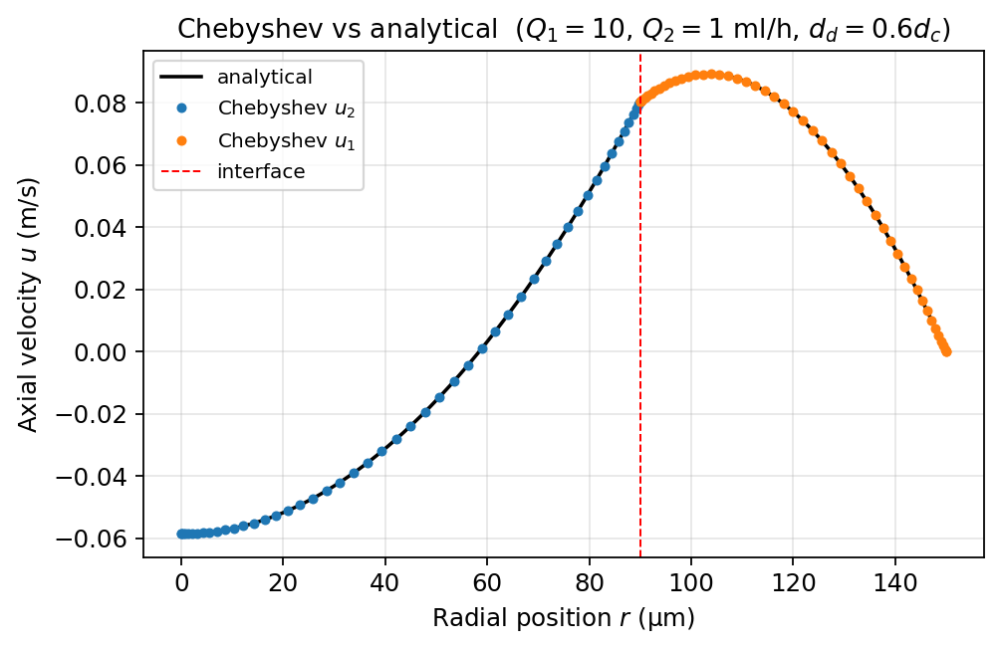
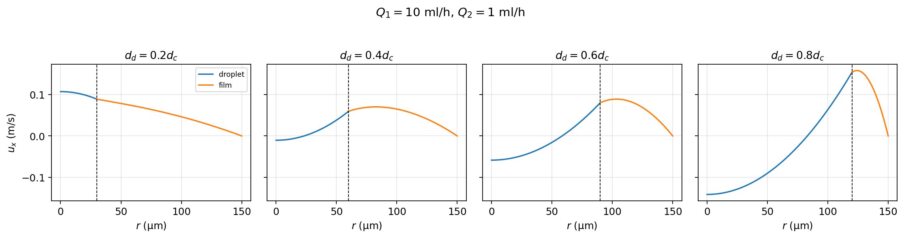
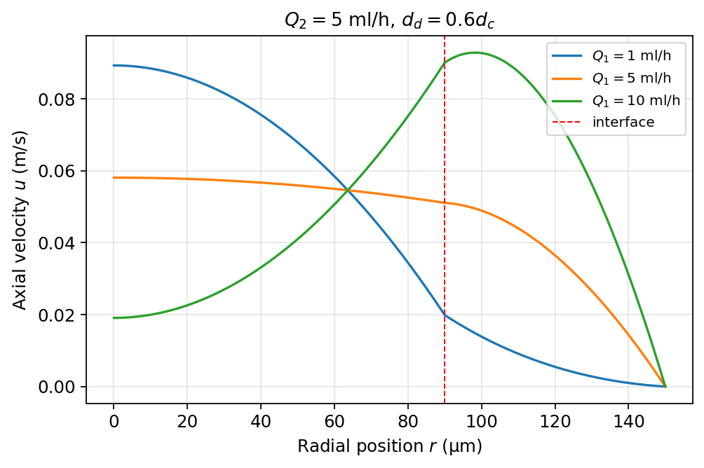
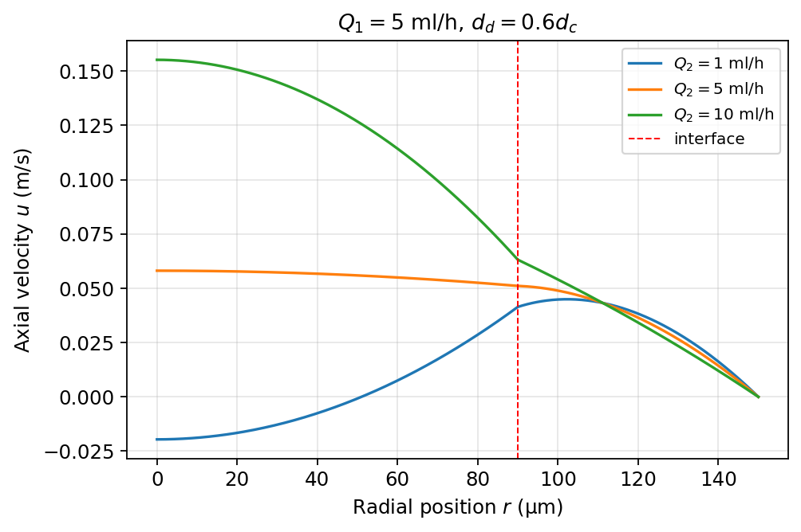
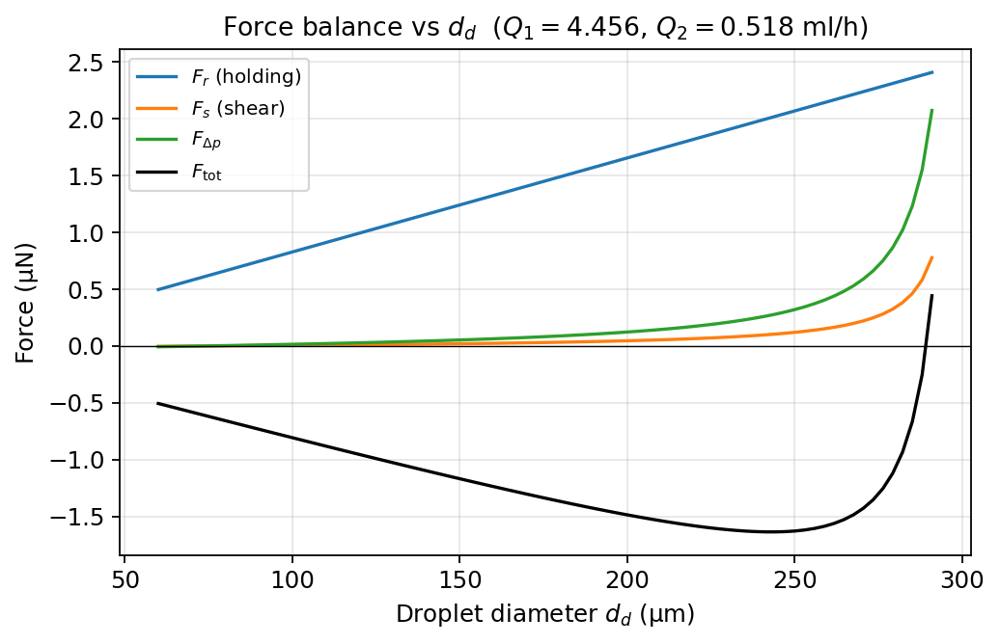
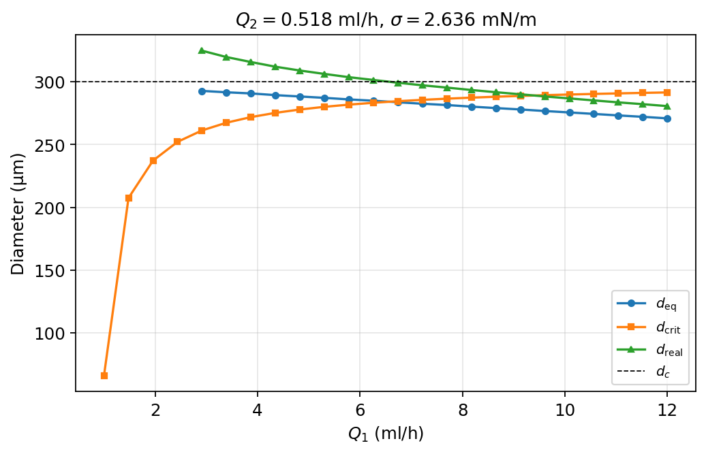

Governing equation
Creeping, steady, axisymmetric flow in a cylindrical channel. Phase 2 occupies the droplet core; phase 1 occupies the surrounding film.
$$ \frac{1}{r}\frac{\mathrm{d}}{\mathrm{d}r}\left(r\frac{\mathrm{d}u_i}{\mathrm{d}r}\right) = \frac{1}{\mu_i}\frac{\partial p_i}{\partial x} $$Boundary conditions: $u_1(R)=0$, $u_2'(0)=0$, $u_1(R_d)=u_2(R_d)=U_{tp}$, and $\mu_1 u_1'(R_d)=\mu_2 u_2'(R_d)$. The pressure gradients $\partial p_1/\partial x$ and $\partial p_2/\partial x$ are fixed by $Q_1$ and $Q_2$.
Reference hydrodynamic case
$Q_1=10~\mathrm{ml/h}$, $Q_2=1~\mathrm{ml/h}$, $d_d=0.6\,d_c$.
| Quantity | Value |
|---|---|
| $\partial p_1/\partial x$ | -2.0761e+05 Pa/m |
| $\partial p_2/\partial x$ | 6.6583e+04 Pa/m |
| $U_{tp}$ | 0.0804 m/s |
| $u_2(0)$ | -0.0586 m/s |
| Recovered $Q_1$ relative error | -8.040e-15 |
| Recovered $Q_2$ relative error | -3.666e-14 |
| Chebyshev $\max|u_1-u_1^{\mathrm{an}}|$ | 3.105e-14 |
| Chebyshev $\max|u_2-u_2^{\mathrm{an}}|$ | 4.154e-14 |

Velocity fields



Force balance and droplet size
$$ F_{\mathrm{tot}} = F_{\Delta p} + F_s - F_r $$$F_r=\pi d_d\sigma$, $F_s=\tau(R_d)A_d$, $F_{\Delta p}=(\partial p_2/\partial x)V_d$. Equilibrium is $F_{\mathrm{tot}}=0$.
| Diameter | Value |
|---|---|
| $d_{\mathrm{eq}}$ | 289.1 μm |
| $d_{\mathrm{crit}}$ | 275.9 μm |
| $d_{\mathrm{real}}$ | 311.3 μm |
| Regime | slug |

